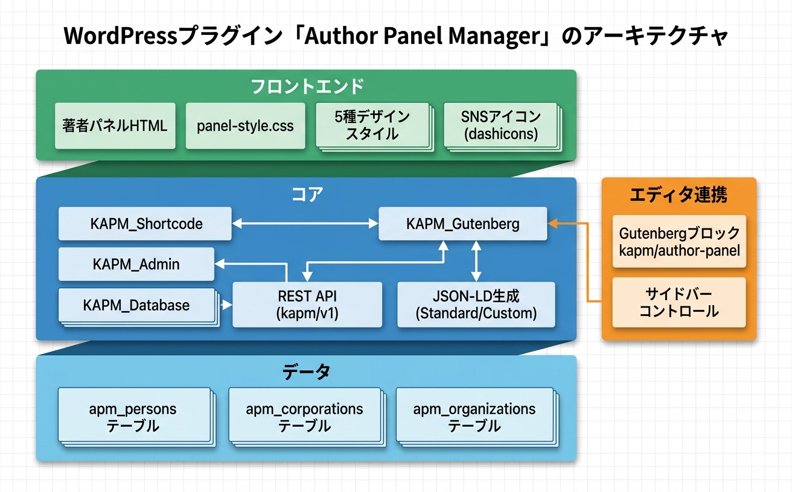

トラブルシューティング
Kashiwazaki SEO Author Panel Manager の使用中に発生しうる問題と対処法、データベース・アンインストールに関する注意事項、技術仕様について解説します。
よくある問題と対処法
パネルが表示されない
| 考えられる原因 | 対処法 |
|---|---|
| プラグインが有効化されていない | 管理画面の「プラグイン」一覧で、本プラグインが有効になっていることを確認してください。 |
| ショートコードの記述ミス | ショートコードが [author_panel persons="1" mode="standard"] の形式で正しく記述されているか確認してください。属性名や引用符のミスに注意してください。 |
| 指定したIDのエンティティが存在しない | 管理画面（admin.php?page=kapm）で該当IDのエンティティが登録されているか確認してください。 |
| Gutenbergブロックが正しく挿入されていない | ブロックエディターで「Author Panel」ブロックを再度追加し、サイドバーでエンティティIDとモードを正しく設定してください。 |
| キャッシュプラグインが古い出力を表示している | キャッシュプラグイン（WP Super Cache、W3 Total Cacheなど）のキャッシュをクリアしてください。 |
JSON-LDが出力されない
| 考えられる原因 | 対処法 |
|---|---|
テーマが wp_head() を呼び出していない |
テーマの header.php に <?php wp_head(); ?> が記述されていることを確認してください。 |
| エンティティの必須フィールドが未入力 | 管理画面で該当エンティティの name フィールドが入力されていることを確認してください。名前が空の場合、JSON-LDは出力されません。 |
| 他のSEOプラグインとの競合 | 他のプラグインが同じエンティティのJSON-LDを出力している場合、重複を避けるためCustomモードの使用を検討してください。 |
Customモードが機能しない
| 考えられる原因 | 対処法 |
|---|---|
| target_schema_idが未指定 | Customモードでは target_schema_id 属性でリンク先スキーマの @id を指定する必要があります。例: target_schema_id="#article" |
| リンク先のスキーマがページに存在しない | 対象のArticle・NewsArticle・WebPageスキーマが同一ページ上にJSON-LDとして出力されていることを確認してください。 |
| @idの不一致 | target_schema_id で指定した値と、リンク先スキーマの @id が完全に一致しているか確認してください。 |
パネルのスタイルが適用されない
| 考えられる原因 | 対処法 |
|---|---|
| CSSファイルが読み込まれていない | ブラウザの開発者ツールで public/css/panel-style.css が正常に読み込まれているか確認してください。 |
| テーマのCSSとの競合 | テーマのCSSがパネルのスタイルを上書きしている可能性があります。開発者ツールで優先度を確認してください。 |
| panel_styleの設定漏れ | 管理画面で該当エンティティの panel_style フィールドが正しく設定されているか確認してください。未設定の場合は default が適用されます。 |
ヒント
問題が解決しない場合は、一度プラグインを無効化してから再有効化してみてください。再有効化時にデータベーステーブルの整合性チェックが実行されます。
データベースとアンインストール
本プラグインは以下の3つの専用テーブルを使用してエンティティデータを保存します。
| テーブル名 | 用途 |
|---|---|
| {prefix}_apm_persons | Personエンティティのデータを保存 |
| {prefix}_apm_corporations | Corporationエンティティのデータを保存 |
| {prefix}_apm_organizations | Organizationエンティティのデータを保存 |
注意
プラグインを削除（アンインストール）すると、上記の3テーブルがデータベースから完全に削除されます。登録済みのエンティティデータはすべて失われます。プラグインの無効化だけではテーブルは削除されません。
補足
本プラグインは wp_options テーブルを使用しません。また、AJAX通信、Cronイベント、外部APIへの通信も行いません。データベースへの影響は上記3テーブルのみです。
技術仕様
- データ保存: 専用テーブル（apm_persons, apm_corporations, apm_organizations）
- wp_options: 使用しない
- AJAX: 使用しない
- Cronイベント: なし
- 外部API通信: なし
- REST API: kapm/v1/persons, kapm/v1/corporations, kapm/v1/organizations
- フロントエンドCSS: public/css/panel-style.css
- メール送信: なし
- セキュリティ: nonce検証、manage_options権限チェック、入出力サニタイズ
アーキテクチャ
Kashiwazaki SEO Author Panel Manager は以下のコンポーネントで構成されています。

フロントエンド
- CSSのみ（public/css/panel-style.css）で5種類のパネルスタイルを実装
- JavaScriptは使用せず、Core Web Vitalsへの影響をゼロに
- Person/Organization JSON-LD をページに出力（Standardモード）
バックエンド
- エンティティデータは専用テーブル（apm_persons, apm_corporations, apm_organizations）で管理
- 管理画面は3タブ構成（Person / Corporation / Organization）で直感的に操作可能
- REST API（kapm/v1）でエンティティデータの取得が可能
- 管理画面は
manage_options権限のユーザーのみアクセス可能 - すべてのフォーム送信に nonce 検証を実施
動作要件
| 項目 | 要件 |
|---|---|
| WordPress | 6.0 以上 |
| PHP | 8.0 以上 |
| ライセンス | GPL-2.0+ |
| 対応ブラウザ | Chrome、Firefox、Safari、Edge（最新版） |